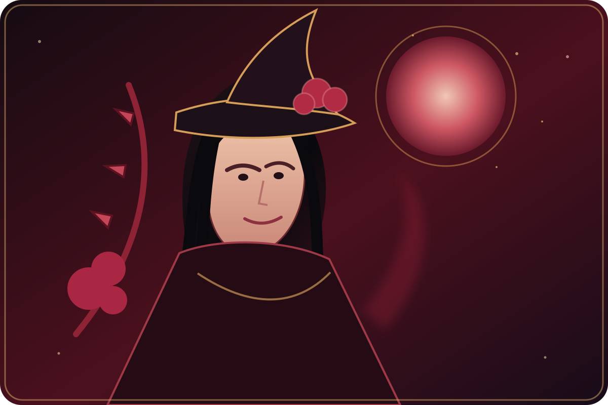

Core Brew · Blood Mage
CRIMSON MOON
Blood Orange · Cherry
De meest krachtige brew van de core range: levendig, fruitig en uitgesproken, met een frisse citrusrichting en een diepere kersentoets.
RPG-class en persona zijn fictieve merkbeleving, geen gezondheidsclaim.